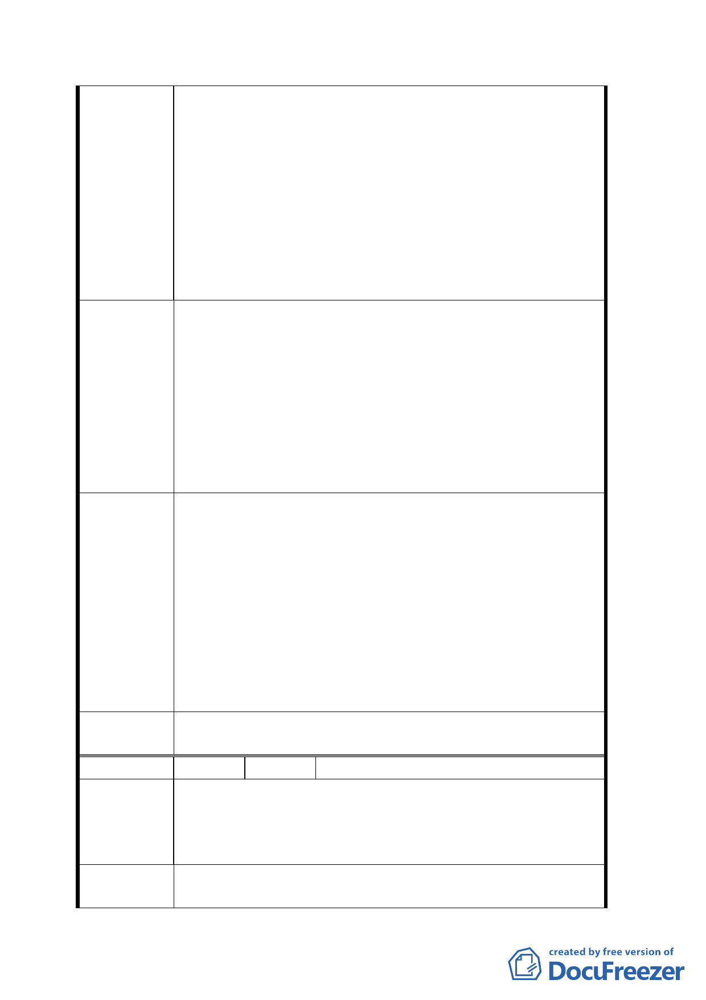

重，且其中受傷最深的就是持有坡度 30%以上之地主，
主因焚化爐、掩埋場、垃圾場、公墓皆較鄰近坡度 30%
以上之土地，如今 鈞府實施變更地區主要計畫案乃是
政府一大德政，亦是回饋當地居民繁榮地方發展之良
策，但年久來受害最深之地主卻無法納入，人人苦不堪
言。
3. 鈞府年久來多次徵收本區土地〈坡度 30%以上〉開闢垃
圾場、焚化爐、公墓等，若本區之土地法令規定不能開
發亦不能納入徵收或區段開發徵收使用，為何 鈞府能
大規模開闢坡地，而居民之坡地卻不能被區段徵收？
1. 懇請 鈞府體察民情，以前二次說明會之發展構想及開
發方式為原則，重新將坡度３０％以上之土地，納入本
計畫案中，〈或至少將區段徵收之坡度放寬至３０％至
５０％〉以帶動本區休閒產業之發展。
建 議 辦 法 2. 可將 30%以上之坡地徵收後作為公園、綠地、森林遊樂
區、攀岩場、休閒用地、公共設施等，此全盤性考量除
可兼顧生態環境保育，亦可帶動本區休閒產業發展，且
可充分利用現有的自然山水資源建構休閒遊憩產業發
展之環境。
93.11.11 專案小組會議結論：
原則同意發展局所提方案，惟請對周邊土地坡度 30%以下部
分再予檢視，必要時予以納入，微調計畫範圍。另因北側
專 案 小 組 福德坑掩埋場未來將規劃同質性之戶外遊憩活動設施，經
結 論 檢討無需併入本案變更。
94.4.14 專案小組會議結論：
同意發展局所提方案及修正範圍，坡度 30%以下範圍重新檢
視納入計畫範圍。
委員會決
議 同意依專案小組 94.4.14 審查結論辦理。
編 號 ２ 陳情人 黃淑愉
建議位置：文山區富德小段２小段２１８．２１９．２２
陳情理由
０．２２４地號。
建議理由：富德段土地被編定為保護區並興建垃圾掩埋
場、焚化爐及富德公墓影響地方發展，請予回饋。
建議辦法
1.請擴大住宅區及商業區範圍。
2.請在木柵路五段之外側景美溪邊開闢河濱公園及休閒遊
五